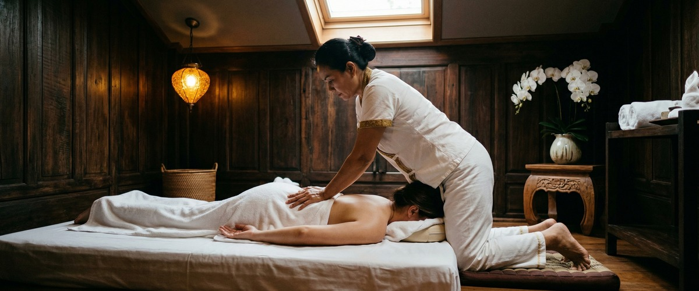
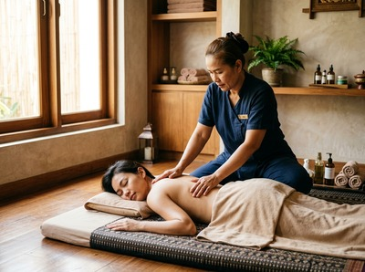

Leelawadee Thai Wellness Centre has been operating in Glasgow for over 15 years, and that kind of longevity speaks for itself.

For many people, a long-established business signals reliability. Those are fair things to look for in a massage therapist.
If you are still searching, it is likely because Leelawadee's website does not show a service menu, pricing, or an online booking system. When you cannot see what is on offer or what it costs before picking up the phone, it makes comparison difficult. That is where Serendipity Massage Therapy & Wellness comes in.

Serendipity is a professional team practice on Hope Street, in Glasgow's financial district. Head therapist Jariya Malone developed the techniques used across all treatments. Every therapist on the team is trained to that same standard. This is not a sole-trader setup or a rotating roster of unfamiliar staff.
The full treatment menu is online, covering traditional Thai massage, Thai oil massage, Swedish massage, hot stone massage, aromatherapy massage, and more. Pricing is clear and visible before you commit. You can book at serendipitymassage.co.uk/book-now without needing to call ahead.
Leelawadee does not display a service menu, treatment details, or pricing on its website. Serendipity lists all treatments and prices clearly. You know what you are booking and what it costs before your appointment.
Leelawadee's 15-plus years of history is a genuine strength. For long-term clients, that relationship has real value. Serendipity's advantage is clarity: a team of trained therapists, round-the-clock online booking, and a full treatment menu with no surprises.
Serendipity is a good fit for professionals based around Hope Street, St Vincent Street, and Blythswood Square. A lunchtime or after-work appointment is a short walk away. It also suits anyone who wants to see pricing and book without a phone call, clients returning from injury who need a steady standard of care, and first-time Thai massage clients who want clear details before they commit.
Leelawadee is at 136 Elderslie Street, roughly a 15-minute walk from Serendipity. Head east along Elderslie Street toward Charing Cross. Continue along Bath Street into the city centre. Turn right onto Hope Street and Serendipity is on your left at Central Chambers, number 93, first floor, Suite 50. From Charing Cross train station, the walk takes around 10 minutes along Bath Street directly to Hope Street.
Get driving directions to Serendipity Massage Therapy & Wellness:
Serendipity Massage Therapy & Wellness — Floor 1, Suite 50, Central Chambers, 93 Hope Street, Glasgow G2 6LD
Book your session today at serendipitymassage.co.uk/book-now.
Yes. Serendipity has a full online booking system at serendipitymassage.co.uk/book-now. You can secure your appointment at any time without needing to call. Leelawadee's website does not display a visible online booking system.
Every therapist at Serendipity is trained in techniques developed by head therapist Jariya Malone. This ensures a consistent standard across all sessions. The practice runs as a professional team, not a sole trader. Leelawadee does not provide detail on therapist training or qualifications on its website.
Serendipity is at Floor 1, Suite 50, Central Chambers, 93 Hope Street, Glasgow G2 6LD. That puts it in the heart of Glasgow's financial district. It is close to Buchanan Street and St Enoch subway stations and within easy walking distance of the offices on St Vincent Street and Blythswood Square.
Serendipity offers a full range of massage treatments including traditional Thai massage, Thai oil massage, Thai aromatherapy massage, hot stone massage, Swedish massage, and more. All treatments are listed on the website with pricing included.
Yes. Serendipity lists all treatment prices on its website. You can see the full cost before you book. Leelawadee's website does not show pricing, so you would need to contact them directly to find out what a session costs.
Serendipity has built long-term client relationships across Glasgow's professional and residential communities. Leelawadee's website does not display reviews or ratings. This makes it harder to judge client experience before booking. Checking Google Business Profiles for both businesses is a useful way to compare directly.
Book your appointment online at serendipitymassage.co.uk/book-now and find out why clients across Glasgow City Centre return to Serendipity regularly.